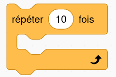
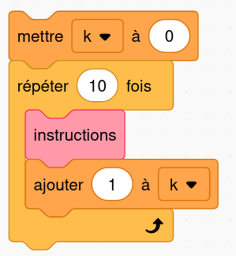
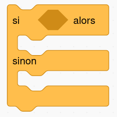

Les bases de Python⚓︎
01 - Les variables⚓︎
Dans un programme on a régulièrement besoin de stocker et manipuler des valeurs comme par exemple des nombres entiers ou à virgule, des chaînes de caractères, des valeurs Vrai/Faux (appelées booléens), etc.
On utilise pour cela des variables : c'est tout simplement une association entre un nom et une valeur. Cette association se fait avec l'opérateur = (qui n'a pas du tout le même sens qu'en mathématiques...).
Exemples:
1 2 | |
On dit qu'on a affacté la valeur 80 (un nombre entier) à la variable pv et la valeur "Pikachu" (une chaîne de caractères) à la variable nom. Notez que les guillemets sont indispensables pour définir une chaîne de caractères.
Si on affecte une valeur à une variable qui existe déjà, l'ancienne valeur sera écrasée. On peut aussi modifier la valeur contenue dans une variable à partir d'elle-même.
À vous de jouer !
Reproduire les instructions suivantes (appuyer sur Entrée à chaque fin de ligne) dans la console ci-dessous.
>>> nom = "Pikachu"
>>> nom
>>> "nom"
>>> Pikachu
>>> pv = 80
>>> pv
>>> pv = 100
>>> pv
>>> pv = pv + 50
>>> pv
02 - Les fonctions⚓︎
Une fonction est un bloc d'instructions (au sens de bloc comme en Scratch). Cette fonction peut être déjà définie dans le langage Python ou dans l'un de ses modules, comme par exemple la fonction bin (vue dans l'activité «Système binaire») qui permet d'obtenir l'écriture binaire d'un nombre entier.
>>> bin(42)
'0b101010'
bin avec le paramètre 42 et elle a renvoyé la valeur '0b101010'.
Un autre exemple de fonction classique de Python est la fonction print qui, comme son nom l'indique, permet d'afficher en console ses paramètres.
À vous de jouer !
Reproduire les instructions suivantes dans la console ci-dessous, en remplaçant éventuellement le prénom par le vôtre.
>>> print("Hello world!")
>>> prenom = "Gabriel"
>>> print(prenom)
>>> print("Bonjour ", prenom)
 Une fonction peut ne pas prendre de paramètre comme la fonction
Une fonction peut ne pas prendre de paramètre comme la fonction avancer de l'activité Pyrates mais il faut l'appeler quand même avec des parenthèses vides !
Créer une fonction
On peut définir sa propre fonction avec le mot-clé def en :
- lui donnant un nom qui n'existe pas déjà
- terminant la première ligne par
: - en indentant (c'est-à-dire décaler de la marge de 4 espaces - ou en utilisant la touche TAB) le bloc d'instructions qui constitue la fonction.
Exemple 1: avec paramètre, sans valeur renvoyée
Copier-coller la fonction suivante dans l'IDE intégré ci-dessous, l'exécuter en cliquant sur le bouton triangle, et appeler (plusieurs fois) la fonction dans la console en changeant la valeur du paramètre.
1 2 3 | |
Exemple 2: avec paramètre, avec valeur renvoyée
On peut faire renvoyer une valeur par une fonction avec le mot-clé return.
-
Copier-coller la fonction suivante dans l'IDE intégré ci-dessous puis l'exécuter en cliquant sur le bouton triangle.
1 2 3 4
def programme_calcul(x): res = x + 3 res = res**2 - 1 return res -
Dans la console, reproduire les instructions suivantes:
>>> a = programme_calcul(2) >>> a >>> b = programme_calcul(7) >>> b -
À quel calcul mathématique correspond l'opérateur
**?
03 - La boucle for⚓︎
L'un des grands principes de la programmation est le fait de pouvoir répéter un certain nombre de fois des instructions (on parle alors de boucle d'instructions), ce qui se faisait en Scratch avec:

En Python, l'équivalent est la boucle for que l'on a rencontrée dans l'activité Pyrates. Elle utilise la fonction range qui génère un ensemble d'entiers consécutifs commençant par 0.
Modèle
Pour répéter 10 fois des instructions:
1 2 | |
L'équivalent en Scratch:

Remarques
- Dans cette instruction,
kest une variable «compteur» : elle est automatiquement augmentée de 1 à chaque passage dans la boucle (on dit incrémenter en programmation). - Ainsi, l'instruction
for k in range(10)peut se traduire par « pourkallant de 0 à 9», ce qui fait bien 10 répétitions. - On peut évidemment nommer comme on le souhaite cette variable:
i,compteur,x,toto,jean_claude... - Les instructions à répéter doivent être indentées (décalées par rapport à la marge).
- On peut utiliser la variable «compteur» dans les instructions de la boucle. Ou pas.
Exemples
Tester chacun des exemples suivants dans l'IDE ci-dessous.
| Sans utilisation de la variable | |
|---|---|
1 2 | |
| Avec utilisation de la variable | |
|---|---|
1 2 3 4 | |
| En décalant le départ à 1 au lieu de 0 | |
|---|---|
1 2 | |
04 - Les tests⚓︎

Un langage de programmation permet d'effectuer des tests sur les valeurs contenues dans les variables et d'exécuter (ou pas) certaines instructions selon le résultat de ces tests. On parle d'instruction conditionnelle qui s'écrit en Python avec le mot-clé if.
Modèle
1 2 3 4 | |
Remarques:
- Une condition est le plus souvent le résultat de la comparaison de deux valeurs avec les opérateurs:
>,>=,<,<=,==(égal),!=(différent) ouin(appartient à). - On remarquera à nouveau les
:en fin de ligne et l'indentation des instructions. - la partie du
elsen'est pas obligatoire.
Exemples
Tester chacun des exemples suivants dans l'IDE ci-dessous (exécuter plusieurs fois en changeant la valeur des variables).
1 2 3 4 5 | |
Sans else.
1 2 3 | |
On peut imbriquer les instructions conditionnelles.
1 2 3 4 5 6 7 8 | |
Il ne faut pas confondre = (affectation d'une valeur à une variable) et == (test d'égalité entre deux valeurs).
1 2 3 4 5 6 | |